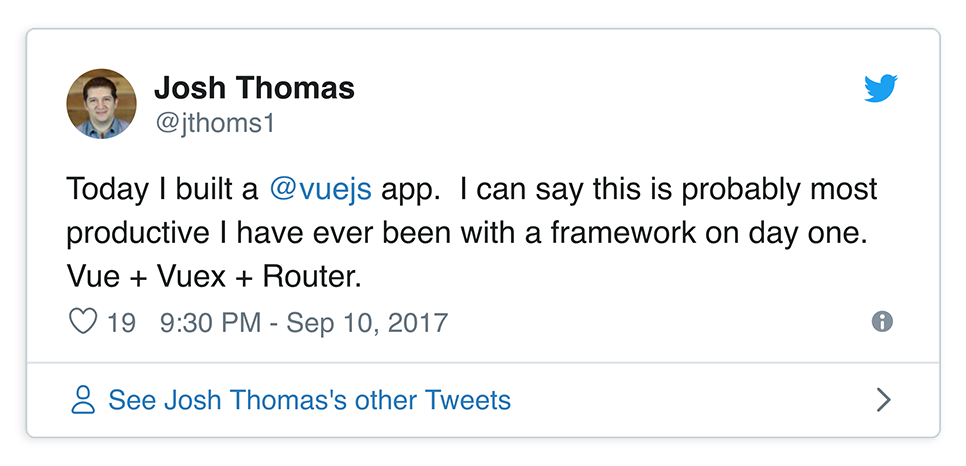

A Vue from Ionic
About Me
- Senior Developer at Ionic
- Ionic Open Source core team member

My Intro to Vue

Why I like Vue
What is Ionic?
What is Ionic?
Why would you use Ionic
Ionic and Vue together
@ionic/vue
The JS ecosystem is changing
- "Which framework do you prefer?"
- Ionic components should work with any framework or with no framework
- Write once use everywhere
Our Answer was Web Components

Capacitor
Using Ionic in Vue
lets see this work
Thank You!